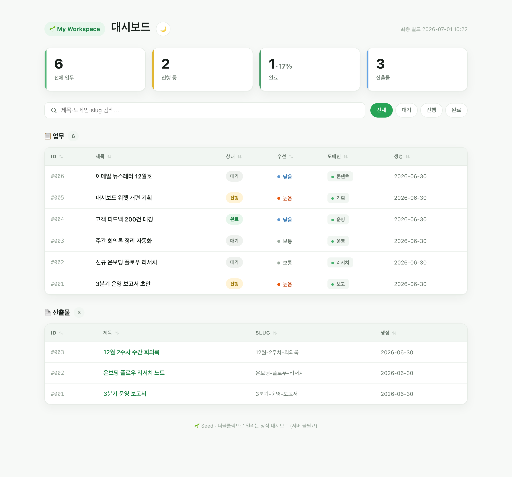
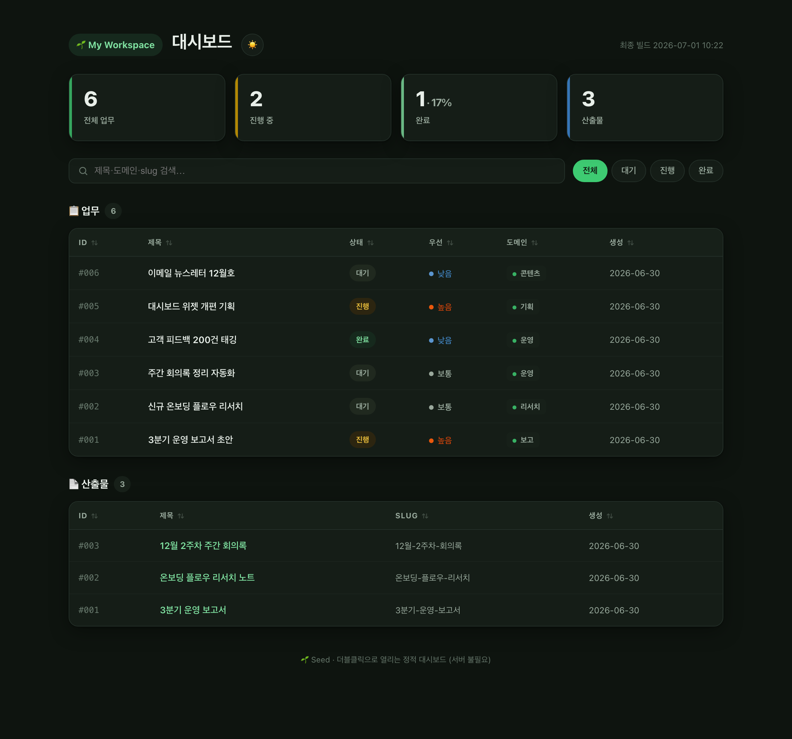
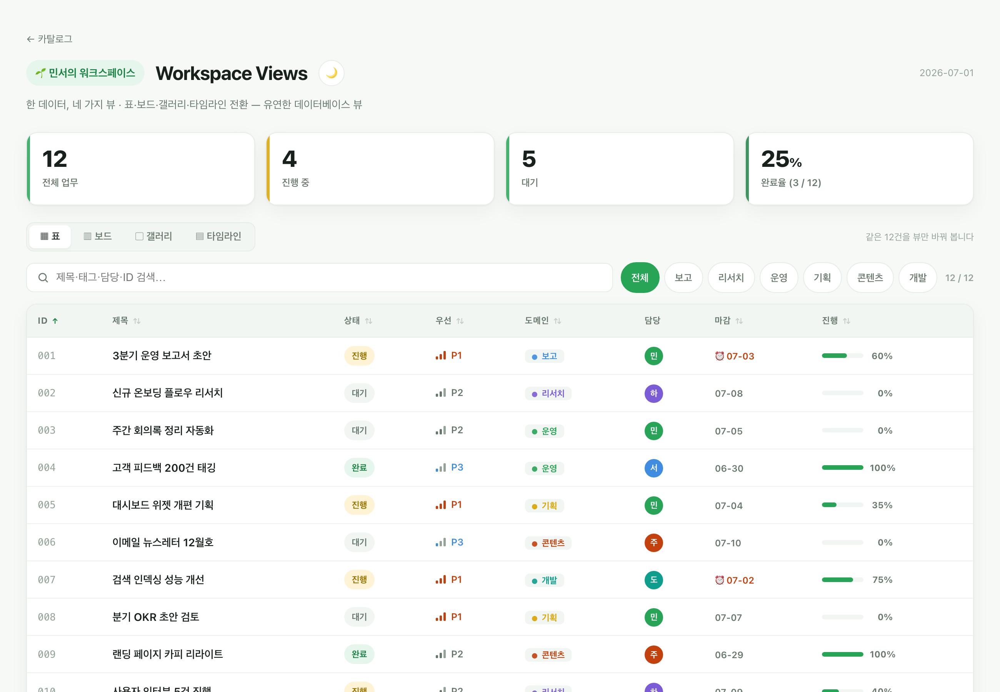
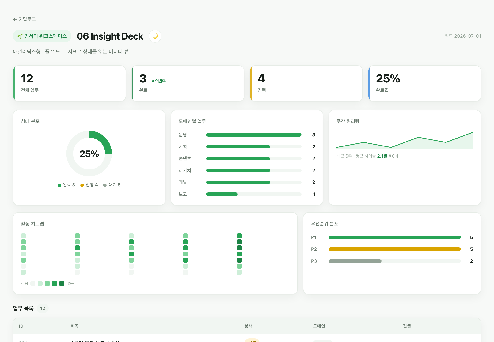
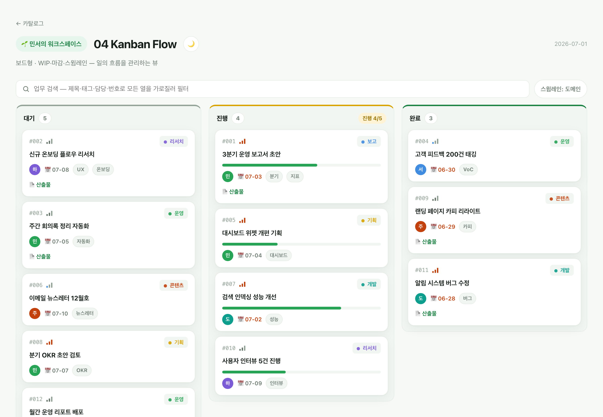
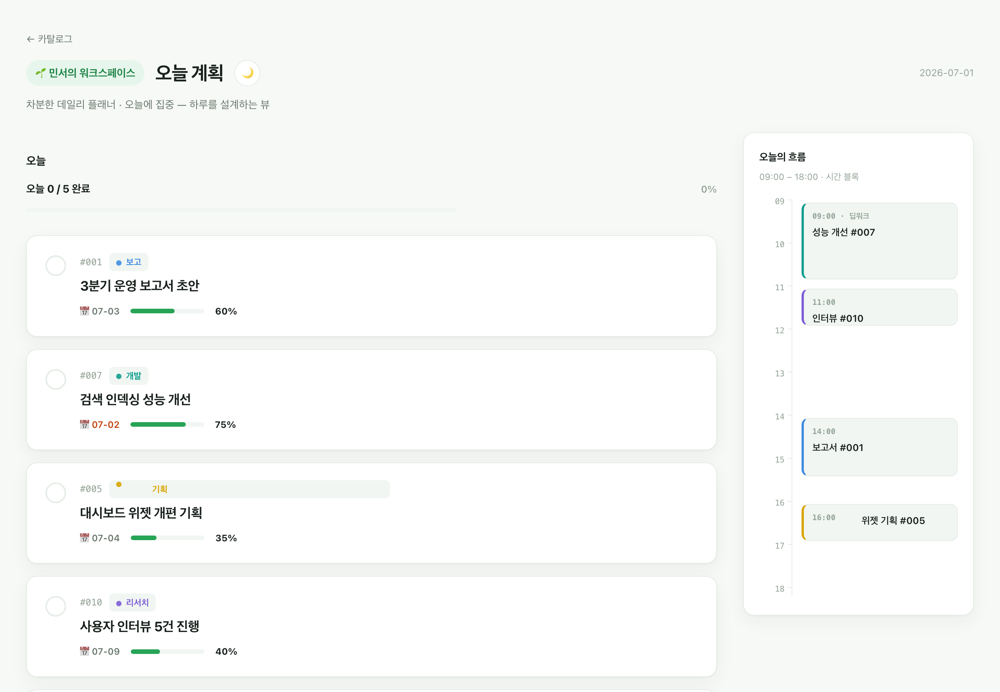
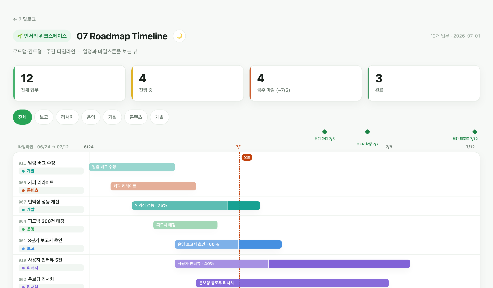
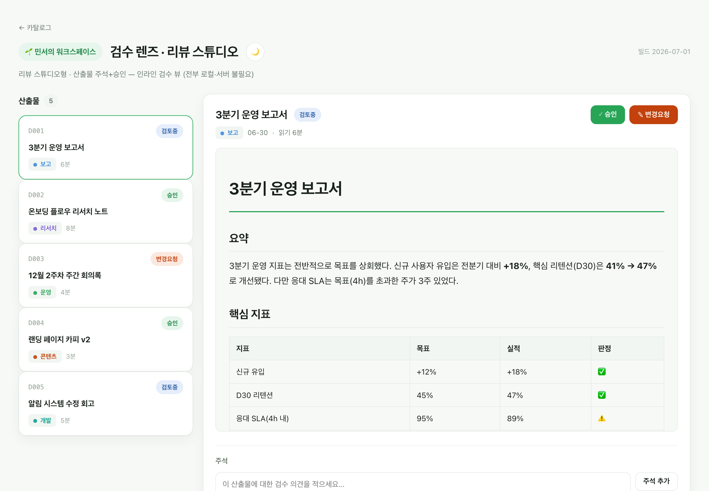
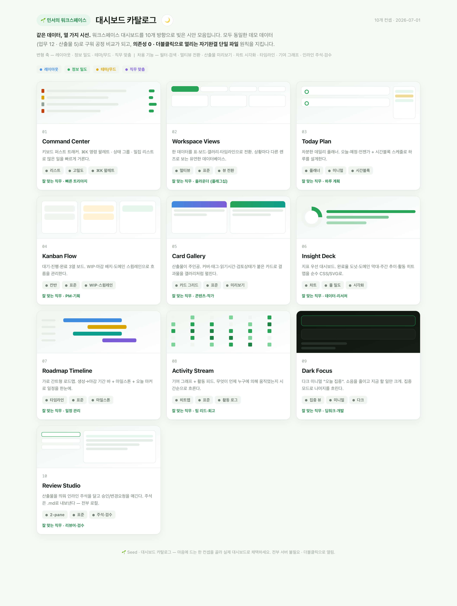
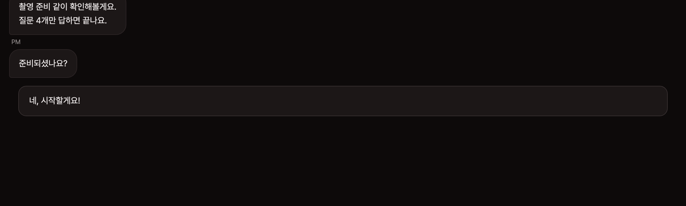

Plant once. Grow your own Claude Code workspace.
흩어진 할 일·문서·메모를 검색되고 한눈에 보이는 대시보드 하나로. Seed가 당신에게 6~8가지를 묻고, 그 답에 맞춰 당신만의 업무 공간을 차려 줍니다. 설치도 서버도 없이 — 파일을 더블클릭하면 열려요.


거창한 도구가 아닙니다. 내 일이 사는 폴더를 내 업무에 맞게 차려 주는 것뿐이에요.
무엇이 좋아지나 — 흩어진 걸 한곳에 모으고 · 한눈에 보이고 · 저장하면 알아서 정리됩니다.
남의 워크스페이스를 통째로 복사하면 내 업무와 안 맞아 결국 방치됩니다. Seed는 당신을 인터뷰합니다. 같은 질문에 당신이 답하면, 그 답이 그대로 구조·조력자·규약이 됩니다.
남의 설정 그대로. 내 일과 안 맞아 손이 안 감.
빈 템플릿이 아니라, 이미 한 번 돌아간 워크스페이스를 건네받습니다.
모든 산출물은 소스(.md) + 렌더(.html) 쌍으로 저장되고, 그때마다 대시보드가 자동 재빌드됩니다. 서버 없이 더블클릭으로 열리고, 데이터는 HTML에 박혀 있습니다.
seed.json 테마 한 줄로 색이 바뀜기본형이 마음에 안 들면, 10가지 컨셉 중 골라 채택하세요. 전부 같은 데모 데이터로 구웠고, 의존성 0 · 더블클릭으로 열립니다.







seed.json의 theme: {accent, mode} 한 줄로 워크스페이스 전체가 물듭니다. 대시보드 우상단 🌙 버튼으로 라이트/다크 즉시 전환(브라우저 기억).
변하는 구조화 데이터(업무·산출물 메타)는 workspace.db(SQLite)에. 쌓이는 텍스트 지식은 wiki/*.md 평문에. 평문은 실패 모드가 없고, 띄울 서비스가 없고, git으로 버전되고, 어떤 LLM이든 그냥 읽습니다.
표준 라이브러리만. pip install 없이 시작.
모든 산출물 .md + .html 쌍으로.
조력자 1~2명, 스킬 3개. 필요해지면 자란다.
SQLite→PG, 정적→서버. 안내만, 강제 X.
Seed로 자기 업무 공간을 꾸리고, 그 안에서 실제 결과물을 만들어 냅니다.

진영님 · 튜터가 촬영 전 4가지만 답하면 끝나는 체크 가이드. 채팅형 인터랙션으로 만들었어요.
사례 열어보기 →당신이 Seed로 만든 것도 보여주세요 — Discussions에 공유해 주시면 여기 실립니다.
설치 스크립트도, 명령어 외울 필요도 없어요. 상황에 맞는 프롬프트를 Claude Code에 그대로 붙여넣으면 됩니다.
이 폴더에 Seed 워크스페이스 템플릿을 설치해줘: https://github.com/hanmariyang/seed-workspace-kit 1) 저장소 파일을 지금 이 폴더로 받아줘 (git clone 후 .git 폴더 제거, 이 폴더는 비어 있어). 2) README.md와 CLAUDE.md를 읽고 /onboard 스킬이 준비됐는지 확인해줘. 3) 준비되면 알려줘 — 내가 /onboard 를 실행할게.
→ 설치 후 /onboard 실행 → 인터뷰가 당신 업무에 맞게 워크스페이스를 세웁니다.
지금 이 폴더에서 Claude Code로 일하고 있어. 여기에 Seed 워크스페이스 키트를 얹고 싶어: https://github.com/hanmariyang/seed-workspace-kit - 내 기존 파일은 절대 덮어쓰지 마 (특히 CLAUDE.md·README·.claude/). - Seed 핵심만 통합해줘: bin/ws.py, bin/render.py, seed.json, deliverables/(대시보드), 그리고 /task·/deliver·/view 스킬. - 이름·경로가 겹치면 덮어쓰지 말고 먼저 물어봐. - CLAUDE.md 엔 Seed 운영 규칙(상태=DB·지식=md, 산출물 md+html, /task·/deliver·/view)을 '추가'만 해줘. 통째로 교체하지 마. - 다 되면 seed.json(이름·PREFIX)만 내 맥락에 맞추고, 첫 산출물 하나를 시연해줘.
🅑는 best-effort — 기존 폴더 병합은 덮어쓰기 위험이 있어 프롬프트가 "덮어쓰지 마 / 겹치면 물어봐"를 강하게 지시합니다.
# 1) Seed 템플릿으로 새 워크스페이스 repo 생성 gh repo create my-workspace --template hanmariyang/seed-workspace-kit --private --clone cd my-workspace # 2) Claude Code 에서 온보딩 — 인터뷰가 시작됩니다 /onboard # 3) 끝나면 대시보드가 뜹니다. 이후엔: /task "이번 주 할 일 등록" /deliver "3분기 보고서 초안" /view # 대시보드 열기